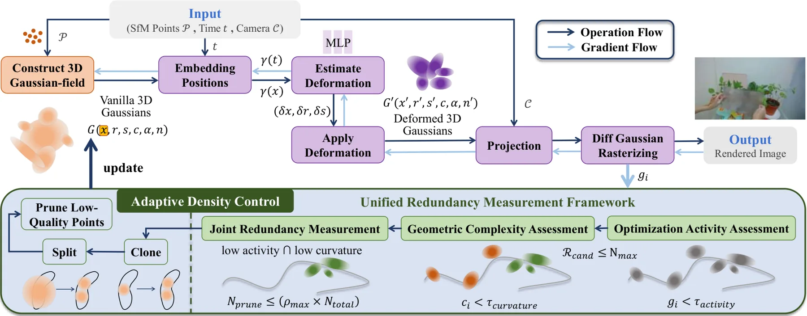
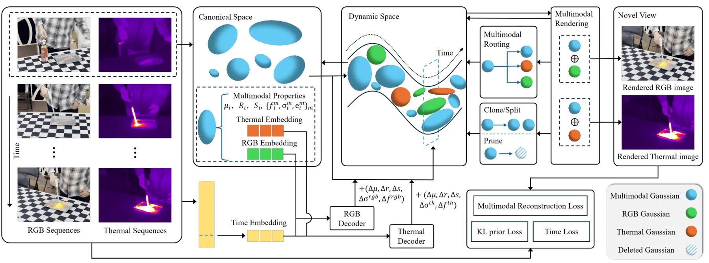
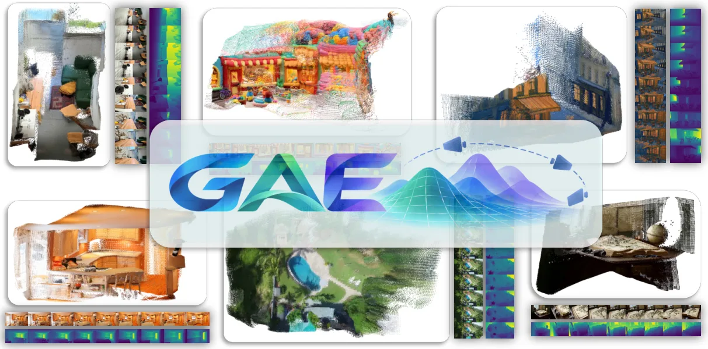
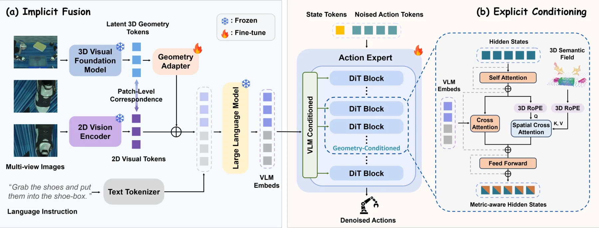
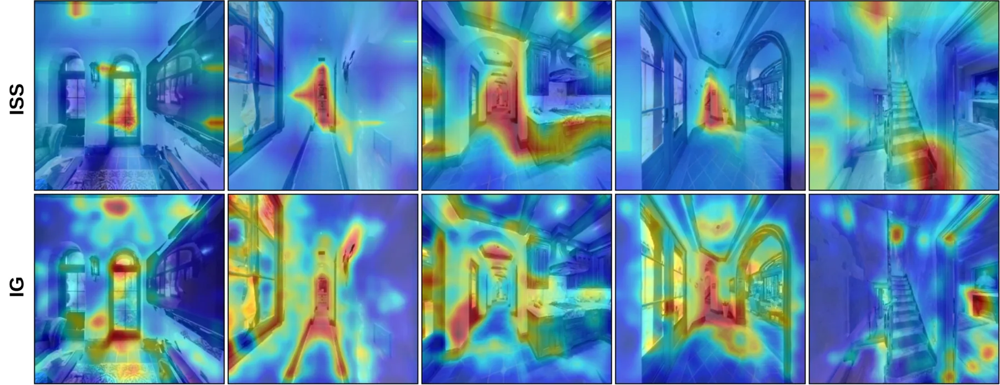
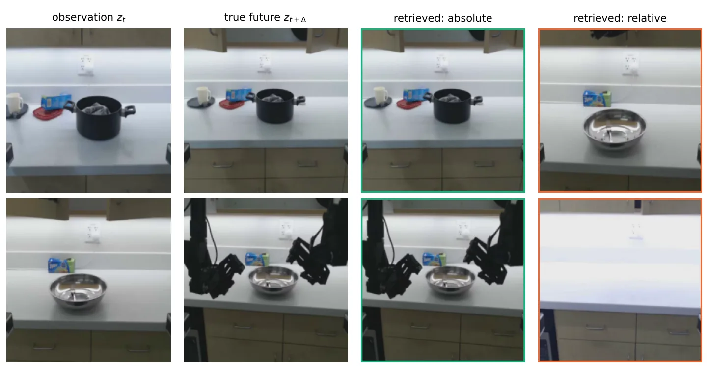
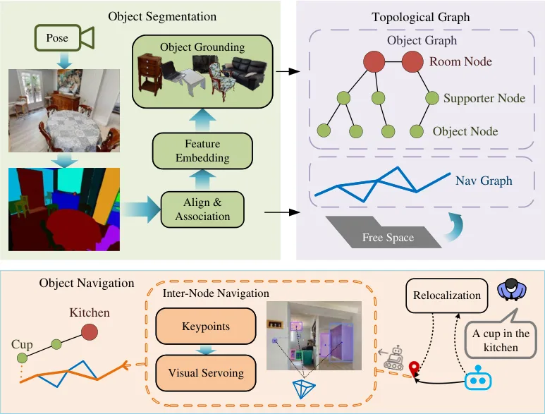

新论文 · 日期 2026-09-21 · score 24 · S层 · Learning + Geometric Optimization SLAM/VIO · cs.RO
内容级别：完整单篇海报（待补全）
作者：Kyeongsu Kang, Seongbo Ha, Sibaek Lee, Hyeonwoo Yu
评分 24/10
预测不确定性RGB-D鲁棒位姿优化关键帧选择
一句话工作总结：把传感器噪声与透明度诱导的地图表示不确定性传播到统一流水线；目标是在不牺牲跟踪与渲染的情况下减少不可靠残差和冗余建图调用。
论文提出在 3D Gaussian Splatting SLAM 中联合估计 RGB 与深度预测不确定性，并把它用于建图、跟踪和关键帧选择。
Neural-rendering-based SLAM relies on rendered RGB-D residuals for camera tracking and map optimization, but the reliability of these predictions can vary substantially because of sensor noise, limited observa…

新论文 · 日期 2026-09-20 · score 18 · S层 · 3D/4D Spatial Perception · cs.CV
内容级别：完整单篇海报
作者：Huiwen Xue, Kaixing Zhao, Zuheng Ming, Tingcheng Li
评分 18/10
动态 3DGS几何剪枝低曲率实时渲染
一句话工作总结：先筛除低优化活跃度候选，再用低曲率几何分析过滤平坦区域冗余点；论文报告保持 PSNR 稳定并获得 2× 渲染加速。
GARO 在动态 Gaussian Splatting 的 adaptive density control 中，用优化活跃度和局部几何复杂度联合判断冗余 Gaussian。
Novel view synthesis is a key task for dynamic scene reconstruction, where high rendering speed is essential for applications such as virtual reality. Existing deformable Gaussian Splatting methods achieve hig…

新论文 · 日期 2026-09-21 · score 17 · S层 · 3D/4D Spatial Perception · cs.CV
内容级别：完整单篇海报
作者：Rongfeng Lu, Lifeng Lin, Xiaobao Wei, Quan Chen
评分 17/10
RGB-Thermal4D 重建多模态路由DynamicRGBT-Scenes
一句话工作总结：新建 DynamicRGBT-Scenes 数据集，包含 12 个同步双视角 RGB-Thermal 序列；多模态路由在共享几何骨干上按细节区域生成模态专属点。
论文提出动态 RGB-Thermal 重建框架，用共享几何 Gaussian 加上模态专属 Gaussian 表达颜色、温度与时空变化。
Thermography plays a vital role in military and broader thermal analysis applications. Recent progress in 3D thermal reconstruction has extended temperature analysis from 2D to 3D space, yet most existing work…

新论文 · 日期 2026-09-21 · score 14 · S层 · Geometry Foundation Models / 3D Foundation Models · cs.CV, cs.RO
内容级别：完整单篇海报
作者：André Amorim, Pedro F. Proença
评分 14/10
几何基础模型FPV真实噪声库LoRA
一句话工作总结：在六段真实 FPV 飞行序列、三个室内场景上，真实噪声注入比 AWGN 和 PSD-matched Gaussian 更能降低深度 RMSE 与 3D 重建 Chamfer distance。
论文研究 analog VTX 的空间结构噪声如何破坏 Depth Anything 3，并用真实噪声库与 LoRA 蒸馏适配模型。
Analog video transmission (VTX) remains widespread in FPV drones due to low latency, weight and low cost. However analog VTX suffers from complex spatially structured image degradation which differ fundamental…

新论文 · 日期 2026-09-22 · score 11 · S层 · Geometry Foundation Models / 3D Foundation Models · cs.CV
内容级别：完整单篇海报
作者：Jiahao Lu, Minghao Yin, Wenbo Hu, Hengyu Liu
评分 11/10
几何原生 latent3D 一致生成point map世界模型
一句话工作总结：在 RealEstate10K 与 DL3DV 上，替换生成 latent 后 FVD 分别下降 12.7% 与 23.1%，且 RealEstate10K 相机轨迹误差减半。
GAE 将几何基础模型特征重参数化为可同时解码外观、深度、相机和 point map 的紧凑 latent。
We present a compact geometry-native latent space as a shared foundation for perception and generation. Visual generators can produce photorealistic frames without preserving a consistent 3D scene. We argue th…

新论文 · 日期 2026-09-21 · score 11 · S层 · Geometry Foundation Models / 3D Foundation Models · cs.RO
内容级别：完整单篇海报
作者：Haoxuan Li, Sixu Yan, Lianghui Zhu, Xuanlai Tang
评分 11/10
3D foundationVLAsemantic fieldaction denoising
一句话工作总结：在 RoboTwin 2.0 上超过 π0 14.0 个百分点，在真实实验中超过 Spatial Forcing 11.7 个百分点，目标是弥合 3D perception-to-action gap。
Bridge3D 同时把 3D foundation features 注入视觉 token，并用显式 3D semantic field 条件化 action denoising。
Vision-Language-Action (VLA) models have demonstrated remarkable generalization in robotic manipulation via large-scale multimodal pretraining. However, VLA models are mainly trained on 2D-centric observations…

新论文 · 日期 2026-09-21 · score 13 · A层 · Embodied Navigation / VLN / Spatial Reasoning · cs.RO, cs.CV
内容级别：半海报
作者：Débora Oliveira Makowski, Samiran Gode, Abhijeet Nayak, Marco Hutter
评分 13/10
VLN因果干预activation steering分布外
一句话工作总结：结果显示策略同时依赖多种输入模态；从 VLM 中提取的行为 activation vector 可零样本迁移到分布外真实场景，无需额外微调。
论文用干预指标研究 VLN 对视觉、指令和 visual memory 的因果敏感性，并用 activation steering 迁移抽象行为。
Modern Vision-Language Navigation (VLN) models rely mostly on pre-trained large Vision-Language Models (VLMs) to predict navigation actions. While this fusion of language instructions and visual observations a…

新论文 · 日期 2026-09-20 · score 10 · A层 · Embodied Navigation / VLN / Spatial Reasoning · cs.RO, cs.AI
内容级别：半海报
作者：Jieling Wu, Yuehao Huang, Jiajun Lv, Tao Huang
评分 10/10
USVVLN语义阶段闭环导航
一句话工作总结：Unity–ROS 闭环导航平均成功率 0.79，并通过未见 bridge-opening 试验与真实 USV 实验验证阶段状态的迁移。
RiverVLN 建立连续河流运动下的长时程 USV-VLN benchmark，PGT-NAV 用语义阶段和视觉—运动历史预测局部位姿增量。
Vision-language navigation (VLN) has largely been developed for indoor and terrestrial robots, where language can often be treated as a static goal and motion is approximated by discrete or near-instantaneous…

新论文 · 日期 2026-09-20 · score 10 · A层 · Robotic Foundation Models / VLA · cs.RO, cs.LG
内容级别：半海报
作者：Ahmed Karim, Leon Chlon
评分 10/10
world model动作参数化不变性鲁棒性
一句话工作总结：三套机器人数据集、两种形态上 retrieval 退化 2.6–13.4×，goal-conditioned action selection 从 53% 降至 15%；objective averaging 可恢复任务性能但 tail 仍需 disagreement penalty。
论文发现同一控制轨迹用 absolute joint targets 与 relative deltas 表达时，world model 预测可能发生灾难性变化。
A robot policy is trained with one of two action parameterizations: absolute joint targets, or deltas relative to the current state. The choice is a live engineering decision in robot learning, and a world mod…

新论文 · 日期 2026-09-21 · score 8 · A层 · Embodied Navigation / VLN / Spatial Reasoning · cs.RO
内容级别：半海报
作者：Linwei Zheng, Daojie Peng, Bingtao Wang, Haoang Li
评分 8/10
开放词汇拓扑图场景图语义伺服
一句话工作总结：在 HM3D、Replica 与真实机器人实验中验证；导航直接在图上进行，不依赖稠密 metric reconstruction。
方法用 object-level semantic graph 与 path-level traversability graph 统一开放词汇 grounding、图定位和拓扑导航。
Vision-language navigation requires embodied agents to navigate environments using natural language instructions and visual observations. Existing approaches typically decompose navigation into sequential lang…